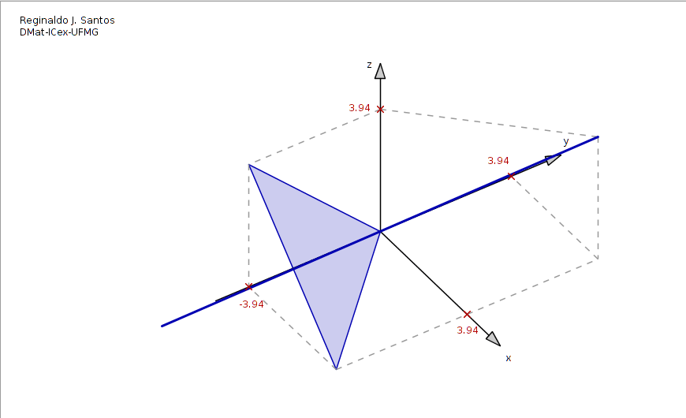

Animação do esboço dos Autoespaços de uma Matriz 3x3
Considere a matriz
$$
A=\left[\begin{array}{ccc}
4&2&2\\
2&4&2\\
2&2&4
\end{array}\right]
$$
Para esta matriz o polinômio característico é
$$p(t)=\det(A-t\, I_3)=(t-2)^2(8-t).$$
Portanto os autovalores de $A$ são $\lambda_1=2$ e $\lambda_2=8$.
Os seus autoespaços são o conjunto solução dos sistemas
$$(A-2I_3)X=\bar{0}\quad\mbox{e}\quad (A-8I_3)X=\bar{0},$$
que são
$$\mathbb{W}_1=\{(-\alpha-\beta,\beta,\alpha)\;|\;\alpha,\beta\in{R}\}$$
e
$$\mathbb{W}_2=\{(\alpha,\alpha,\alpha)\;|\;\alpha\in{R}\},$$
respectivamente. O primeiro é o plano $x+y+z=0$ e o segundo é a reta que passa pela origem que tem vetor diretor $V=(1,1,1)$.
